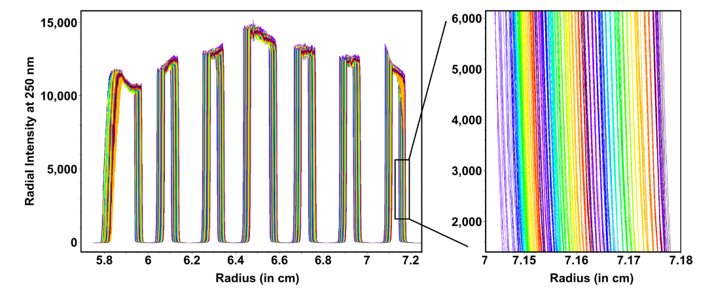
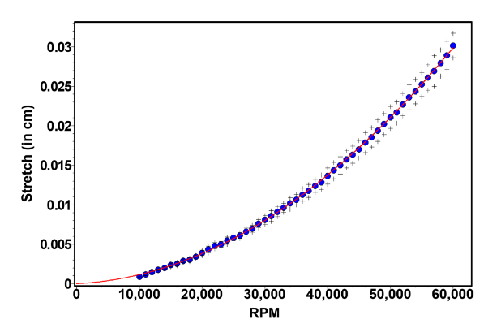

Titanium Rotor Stretch
For more information, see:
Calibration Results
Using the calibration disk, described here, highly accurate and reproducible rotor stretching profiles for Beckman's AN50Ti and AN60Ti rotors were obtained (see Table 1). The rotor stretch fits for the same rotor at 20\(~^{o}\)C varied by less than 0.25% in the stretch numbers at 60,000 RPM.
When comparing the same rotor (Table 1: Rotor 92u341) across three different temperatures (\(4~^{o}\)C, \(20~^{o}\)C, and \(37~^{o}\)C), there was a maximum of 0.88% difference. This finding is consistent with previous research on the physical properties of titanium12 which suggest minimal changes as a function of temperature. However, the mximum stretch values at 60,000 RPM from three An60Ti rotors varied by as much as 3% when measured at the same temperature.
Predicted values for the An50Ti rotor suggest that these rotors will stretch more than the An60Ti rotors by an average of 4.3%. The amount of maximum stretch was not correlated to the age of the rotor.
\(\textbf{Table 1}\) Rotor stretch calibration resutls for the five rotors in use at the Canadian Center for Hydrodynamics at the University of Lethbridge, Alberta, Canada.
Profile Collections
Here is a method to measure the titanium rotor stretch of the 4-hole An-60 and the 8-hole An-50 rotors as a function of speed to predict the precise movement of the radial reference frame during rotor acceleration. The protocol (for both the Optima AUC and the Proteomelab instrument) is as follows.
-
Using the manufacturere's counterbalance in hole 4 or hole 8 (dependent on rotor type), the Optima AUC was radially calibratied, using the manufactuer's programmed method. This method calibrates at 3,000 rpm and 250 nm.
-
The calibration disk, described above, is sandwiched between two windows and their window holders in the standard cell housing, fitted with two spaces (8.5 mm space above the upper windown, 3 mm space below the lower window). The opposite hole can be filled with either a counterbalance or filled cell of equal weight to balance the rotor.
-
The rotor is accelerated to 60,000 rpm for 10 mins to allow for all cell components to enter their equilibirum positions within the cell housing.
-
The rotor is brought down to rest, and temperature equilibrated for at least 2 hours under vacuum to remove any stretch hysteresis.
-
Calibration data is collected with a run profile that accelerates to 3,000 rpm, and after a 15-min delay, scans the calibration disk at least 5 times.
-
The rotor is then accelerated by 1,000 rpm to 4,000 rpm, and a second round of data collection is performed, after another 15 minute delay.
-
This is repeated, with increments of 1,000 rpm for each step, until the maximum speed is reached. For the An-60, that is 60,000 rpm; for the An-50, it is 50,000 rpm.

\(\textbf{Figure 1}\) Intensity rotor stretch data collected from a calibration disk from an An-60 rotor, 0-60,000 rpm in 1,000 rpm steps.
Insert: Zoomed region shows the quadratic change in stretch spacing dependence on rotor speed. Colour changes from blue, green, yellow, to red, as the speed increases.
Analysis of Profiles

\(\textbf{Figure 2}\) Rotor stretching data for an AN60Ti rotor between 10,000 RPM and 60,000 RPM (blue), fitted to a second order polynomial (red). The black crosses represent the standard deviation.
The rotor calibration experiment is the first set of data all UltraScan-III users should acquire for their own rotor and instrument. Titanium rotors used in the Beckman Analytical Ultracentrifuge will stretch as a function of rotor speed, temperature, age and type of centerpieces loaded in them.
UltraScan-III contains a rotor calibration program that allows you to easily determine your rotor's particular rotor stretching function, and to incorporate this information automatically in the analysis routines in UltraScan. The idea is that you run a calibration experiment where the stretching of the rotor is measured on your instrument, and then these data are fitted to a rotor stretching function, which is then stored in the program and used to provide, in combination with the known centerpiece geometry, the correct boundary conditions for the ASTFEM solutions.
Step 1: Measurement of the calibration data
To measure the calibration data, select the centerpieces and rotor to be calibrated and make sure that the centerpieces and counterbalance are properly balanced. An imbalance in the rotor may cause tilting, and deteriorate the sharpness of the centerpiece corners since they are no longer vertical. It is recommended to leave the centerpieces empty. Use fully assembled cells in the 4 hole rotor and 7 in the 8 hole rotor, and insert the counterbalance. Program a methods scan in the Beckman data acquisition software with the following settings:
-
Radial mode, 0.001 cm resolution, continuous mode
-
Limits: 5.7 cm to 7.3 cm
-
Scan all cells, including the counterbalance
-
Acquire intensity data, not absorbance or interference data.
-
Set the monochromator to 230 nm
-
Starting with 3000 rpm, perform duplicate or triplicate scans at 1000 rpm increments up to 50,000 (AN50Ti) or 60,000 rpm (AN60Ti)
-
Wait for 5 minutes at each speed before scanning to make sure the rotor stretch is equilibrated
Note for Proteomelab users: Use the Equilibrium Method Panel in the Beckman data acquisition program to program all speeds to make sure all speed scans are recorded in the same directory.
Step 2: Convert Legacy Data
Import the data into UltraScan-III with the "Convert Legacy Data" function in the "Utilities" menu.
\Make sure to classify the data as a "Calibration" experiment, not a velocity or equilibrium experiment!
Create a new rotor with the rotor utility under "Edit Run Information", "Select Lab/Rotor/Calibration" with the "Add new Rotor" function. Select a default dummy rotor calibration, since you don't have a valid calibration yet. The dummy calibration is based on the calibration of one of our rotors, and is probably fairly typical for all Beckman rotors, but it is worth it to get your own calibration to make sure the data are optimal. Later on, you will be able to replace the dummy calibration with your own calibration so it can be picked by default. Proceed with the legacy data conversion as described in the UltraScan-III Manual.
Step 3: Calculate the rotor calibration
Load the data into the UltraScan-III Rotor calibration" program in the "Utilities" menu. The program will show alternating views of the intensity profiles for top and bottom, and channel A and channel B. So, each cell will provide four sets of calibration data for the rotor stretch. These data also are used to calculate average dimensions for the cells and the center position at rest. This position should be at 6.500 cm. A consistent deviation of this number could reflect an incorrect radial calibration file for your instrument. The top of each channel is shown in red, and the bottom of each channel is shown in green. Using the mouse, draw a rectangle around the most vertical section of each plot as shown in this figure. Repeat until all cells and the counterbalance have been processed. When the last counterbalance corner has been defined, a calibration profile will appear on the screen and the calibration information can be viewed.
In this example, the center position for cells 1-3 all show a consistent drift to the right, with about 0.02 cm offset from center. There are three possible reasons for this:
-
the cell housings are worn out and the centerpiece is not correctly positioned in the center of the rotor hole;
-
the rotor calibration file has inaccurate calibration information, or;
-
the cell has not been properly aligned and the centerpiece is not correctly positioned in the rotor hole.
When the bottom positions are significantly different for each channel of a cell, the cell may be misaligned in the rotor, When the bottom position at rest does not agree with the measured values for each centerpiece, then the calibration file is most likely inaccurate, or the cell housing is worn out.
Step 4: Associate the rotor calibration with the right rotor
Once you are satisfied with the rotor calibration profile you can associate it with your rotor in the Rotor Calibration program of UltraScan-III.
-
Chu, J., Steeves, C. (2011). Thermal expansion and recrustallization of amorphous Al and Ti: a molecular dynamics study. J Non-Cryst Solids, 357(22-23), 3765-3773.↩
-
Steeves, C., Mercer, C., Antinucci, E., Ny, M., Evans, A. (2009). Experimental investigation of the thermal properties of low expansion lattices. Int J Mech Mater Des, 5(2), 195-202.↩